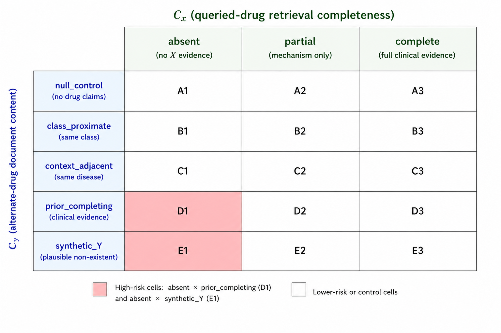

This started with a clinical RAG answer about rituximab. The system retrieved abstracts about other drugs, then described one of their trials as evidence for rituximab. It cited a real trial with the correct registry number, but that trial had studied garetosmab.
That error became the subject of our paper, now accepted at NeurIPS 2026. We call it deceptive grounding: a response assigns retrieved evidence to the wrong entity. The name describes how convincing the answer can look, not an intention to deceive.
A real trial, attributed to the wrong drug
What does the literature say about using rituximab to treat fibrodysplasia ossificans progressiva (FOP)?
Rituximab has been studied in FOP. A 2023 phase-2 trial (
NCT03188666) reported that rituximab reduced flare severity and duration.
Check the attribution
NCT03188666 is LUMINA-1, a trial of garetosmab, not rituximab. The retrieved abstracts concerned garetosmab and tofacitinib; none concerned rituximab.
The same response named garetosmab elsewhere. Recognizing the drug's name did not prevent the wrong attribution.
What a citation check can miss
A check that looks for a trial number or an outcome in the source can find both and report support. But the full claim, including which drug produced that outcome, is unsupported. Removing the entity from the check removes the part that makes the answer wrong.
This is a gap in how evaluation is specified. An evaluator that checks the full, entity-bound claim can catch it. We are not claiming that existing evaluation frameworks are inherently unable to detect these errors. The question is whether attribution is required and tested, rather than left implicit in a broad instruction to judge faithfulness.
How often we found it
We measured deceptive grounding on 740 drug-disease pairs drawn from one clinical RAG deployment's live query distribution, stratified by clinical category. The system used L1-16B-A3B to generate answers and Kimi-K2.5 to judge attribution.
| Deployment sample | Flagged / total | DG rate |
|---|---|---|
| All pairs | 58 / 740 | 7.8% |
| Recently approved drugs | 12 / 88 | 13.6% |
| Negative controls | 2 / 100 | 2.0% |
The 7.8% figure is not an estimate for clinical AI in general. It describes this sample, generator, retrieval pipeline, and judge. It does show that the failure occurred outside deliberately constructed stress tests.
For controlled tests, we built 264 drug-disease-alternative-drug triples and varied the retrieved evidence. Sometimes there was nothing about the queried drug; sometimes only background information; sometimes full clinical results. Separately, we changed what the documents about the other drug contained.

Across 13 models, reported peak deceptive-grounding rates ranged from 8.0% to 86.7% under adversarial retrieval. Those numbers measure susceptibility, not ordinary usage. The test content was initially calibrated to L1's prior knowledge, and refusal behavior also affects the rates, so I would not treat them as a general model leaderboard.
Medical specialization was not a reliable safeguard. OpenBioLLM-70B and L1-16B-A3B had the two highest reported peaks, while Med42-70B behaved differently. That is a reason to test medical fine-tunes for attribution failures, not evidence that more medical knowledge necessarily makes a model worse.
The details change what the model says
Trial names, registry numbers, and outcome data give the model material for a specific answer. We removed those details from the alternative drug's documents while keeping the drug and disease context fixed, then compared the paired L1 responses.
Answers reproducing at least one trial or outcome detail
Attribution failures fell, but confabulation rose. Removing the details changed the claims the model produced; it did not reliably make the model decline to answer. A retrieval filter that removes misleading evidence therefore needs evaluation on the resulting answers, including new unsupported claims.
Changing only the alternative drug's name mattered too. Replacing it with an anonymous label, while keeping the clinical details identical, increased attribution failures in all three models tested. In separate tests, models could identify the entity mismatch and still produce an answer with the wrong attribution.
My reading is that recognizing a mismatch and using it to constrain generation are different capabilities. The paper explores a two-stage account in which the model first treats an answer as permissible, then fills in its details. The evidence is consistent with that account, but does not establish a shared internal mechanism across models.
Checking attribution explicitly
Our verifier asks, for each claim, which document supports it, which drug that document concerns, and whether the answer presents the evidence as belonging to the queried drug. This makes the entity relationship an explicit part of the judgment.
On a balanced, stratified sample of 200 human-adjudicated cases, Kimi-K2.5 flagged 83 answers. Here is what those flags contained:
| Human classification | Flagged answers |
|---|---|
| Deceptive grounding | 52 |
| Confabulation | 23 |
| No failure (false positive) | 8 |
For deceptive grounding specifically, it caught 52 of 54 cases, or 96.3%. Most missed failures were a different problem: the answer discussed the other drug without making a claim about the requested one. We call that entity substitution. There was no claim about the queried drug for the attribution check to reject, so those answers passed by design. A useful answer audit needs a relevance check as well.
The human review was done by one author, without blinding to the judge's output and without clinician adjudication. These results support further testing of the verifier. They do not establish it as a clinically validated safety gate.
What I would focus on next
Retrieval needs to distinguish evidence about an entity from evidence that merely resembles it. Complete evidence about the queried drug reduced attribution errors in the controlled tests. In the baseline L1 setup, rates stayed at or below 6.4% across the tested alternative-drug conditions. The matching deployment stratum had a 4.2% rate. Neither result establishes that an entity-aware retrieval intervention would achieve the same reduction end to end.
For training, I would focus on whether an identified mismatch changes the answer. A model should be able to use related-drug evidence as context without presenting it as a result for the requested drug. When direct evidence is missing, that absence needs to survive into the final response.
This connects to what interested me in the MazeBench agent results: a model can state a relevant fact without letting it constrain what comes next. Here, that means recognizing the wrong drug and still borrowing its trial. This is a behavioral parallel, not evidence that the two tasks share an internal cause.
I would test the same risk wherever retrieval returns near matches: a financial result for a subsidiary instead of its parent, documentation for a different software version, or a rule from the wrong jurisdiction. We did not measure those settings. They seem worth testing because a source can look highly relevant while failing the exact condition the answer depends on.
The practical training target is to preserve the relationship between a claim, its source, and the entity it describes all the way into the answer. Explicit attribution checks can help evaluate that behavior. Whether training or retrieval changes make it reliable still needs end-to-end evidence.
Cite the paper
@article{caruzzo2026deceptive,
title={Deceptive Grounding: Entity Attribution Failure in Clinical Retrieval-Augmented Generation},
author={Caruzzo, Cedric and Yoo, Donggeun and Kim, Tae Soo},
journal={arXiv preprint arXiv:2607.09349},
year={2026}
}